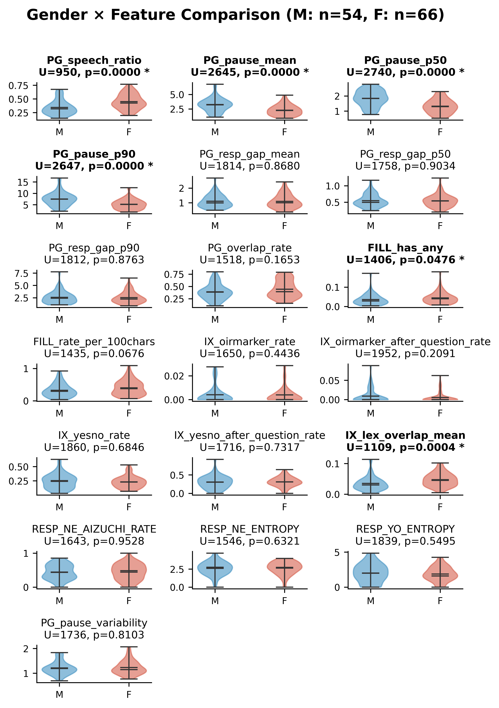

Slide 1 / 9
データと手法
データ
- コーパス: CEJC（日本語日常会話コーパス）home2サブセット
- 品質フィルタ: HQ1（高品質フィルタ適用済み）
- サンプルサイズ: N = 120（conversation × speaker）
- 特徴量: 19説明変数（Classical 10 + Novel 9）
手法
- 回帰モデル: Ridge回帰（α = 100）
- 交差検証: 5-fold subject-wise CV
- 統計検定: Permutation test（5,000回、seed = 42）
- 安定性評価: Bootstrap係数安定性分析
- 教師ラベル: 4 LLM教師のitem-level平均（アンサンブル）
N=120の自然会話データに対し、Ridge回帰＋置換検定で特徴量とBig5の関連を頑健に評価する設計である。
Slide 2 / 9
特徴量の分類
| # | Classical（既存研究ベース: PG + FILL = 9個） | Novel（新規提案: IX + RESP = 9個） |
|---|
| 特徴量名 | 概要 | 特徴量名 | 概要 |
|---|
| 1 | PG_speech_ratio | Speech ratio | IX_oirmarker_rate | OIR marker rate |
| 2 | PG_pause_mean | Mean pause duration | IX_oirmarker_after_question_rate | Post-question OIR rate |
| 3 | PG_pause_p50 | Median pause | IX_yesno_rate | Yes/No response rate |
| 4 | PG_pause_p90 | 90th percentile pause | IX_yesno_after_question_rate | Post-question Yes/No rate |
| 5 | PG_resp_gap_mean | Mean response gap | IX_lex_overlap_mean | Lexical overlap |
| 6 | PG_resp_gap_p50 | Median response gap | RESP_NE_AIZUCHI_RATE | Post-NE aizuchi rate |
| 7 | PG_resp_gap_p90 | 90th percentile response gap | RESP_NE_ENTROPY | Post-NE response entropy |
| 8 | FILL_has_any | Filler utterance rate | RESP_YO_ENTROPY | Post-YO response entropy |
| 9 | FILL_rate_per_100chars | Filler rate per 100 chars | PG_pause_variability | Pause duration CV |
| 10 | PG_overlap_rate | Overlap rate | | |
既存研究ベースのClassical 10特徴量と、会話分析・相互行為論に基づくNovel 9特徴量の2群で構成される。
Slide 3 / 9
提案特徴量の分布
📐 CEJC home2 HQ1（N=120）から抽出した19特徴量（Classical 10 + Novel 9）のバイオリンプロット。
19特徴量は適度なばらつきを持ち、個人差を捉える指標として有用である。
Slide 4 / 9
カテゴリ内/間相関
📐 18特徴量間のPearson相関行列。カテゴリ順: PG→FILL→IX→RESP。
同一カテゴリ内で高相関を示す一方、カテゴリ間は独立性が高い。
Slide 5 / 9
コーパス基本情報との関連
📐 性別: Mann-Whitney U検定（M=54, F=66）。年齢: Pearson r / Spearman ρ。


性別・年齢と一部特徴量に有意な関連が認められた。
Slide 6 / 9
アンサンブルBig5 Permutation
📐 4教師のIPIP-NEO-120 item-level平均 → Ridge（α=100）+ 5-fold CV + Permutation test（5,000回）。
4教師item-level平均によるアンサンブルBig5で、O, C, A, Nの4次元が有意（Eのみ非有意）。
Slide 7 / 9
3段階Ridge回帰比較
📐 Stage 1: 人口統計のみ（2変数）→ Stage 2: +Classical（11変数）→ Stage 3: +Novel（20変数）。Ridge（α=100）+ 5-fold CV + Permutation test（5,000回）。
人口統計→Classical→Novelの段階的追加により予測精度が向上し、各特徴量群の追加効果（Δr）を明示する。
Slide 8 / 9
Bootstrap分散分析
📐 Bootstrap 500回リサンプリング（N=120復元抽出）。各特徴量の回帰係数の平均・SD・95%CIを算出。
95%CIがゼロを跨がない特徴量を「影響が強い特徴量」として同定し、SD/CIベースで係数の安定性を評価する。
Slide 9 / 9
ベースライン検証（3条件比較）
📐 条件1: テキスト全文（既存結果）。条件2: 4統計量のみ（発話数・平均発話長・会話長・フィラー数）。条件3: 別話者テキスト（derangement, seed=42）。各条件で4教師アンサンブル → Ridge + Permutation test（5,000回）。
3条件比較: robs（Holm補正後）
| Trait | 条件1
テキスト | 条件2
要約のみ | 条件3
ランダム |
|---|
| O | 0.410 * | 0.528 * | 0.161 |
| C | 0.432 * | 0.640 * | −0.080 |
| E | 0.234 | 0.302 * | −0.072 |
| A | 0.449 * | 0.374 * | 0.071 |
| N | 0.317 * | 0.711 * | −0.280 |
Cronbach's α（条件2 vs 条件1）
| Trait | 条件1 α | 条件2 α
（4教師平均） | 判定 |
|---|
| O | ≥ 0.78 | 0.063 | 崩壊 |
| C | ≥ 0.78 | 0.176 | 崩壊 |
| E | ≥ 0.78 | 0.041 | 崩壊 |
| A | ≥ 0.78 | 0.194 | 崩壊 |
| N | ≥ 0.78 | 0.298 | 崩壊 |
解釈
- 条件3の崩壊 → LLMはテキスト内容を読んで性格推定している
- 条件2のα崩壊 → 統計量だけでは一貫した性格像を構成できない
- 条件2のr_obs高値 → 19特徴量の一部（PG系・FILL系）が表層統計量と相関するため交絡経路で相関が生じる
- → 特徴量によるハーネス（検証レイヤー）の必要性を裏付ける
条件3（ランダム）で予測力が消失 → LLMはテキスト内容を利用している。条件2（要約のみ）でもr_obsが高いが、Cronbach's αは崩壊（平均0.04〜0.30） → 一貫した性格像は構成できていない。